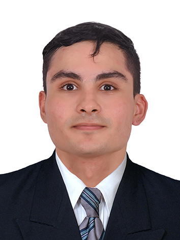

Alexander Arroyave Zapata

Información General
Resumen Profesional
Ingeniero agrícola con tres años de experiencia profesional. Dividida en catastro
multipropósito, agricultura de precisión y sistemas de información geográfica. He
trabajado como piloto de drones, editor cartográfico y Técnico Catastral. Cuento con
destreza en manejo de software, especialmente los relacionados con agricultura,
información geográfica y catastral. He implementado catastro multipropósito y el
modelo LADM con la Unidad Administrativa Especial de Catastro Distrital y Cinteli
Group. Realicé mi práctica en el Ingenio Manuelita y soy piloto profesional de
drones. Cuento con cursos del proyecto SWISS Tierras en Sistema de Administración
del Territorio y en la norma ISO 19152:2012 LADM Colombia. Al momento, me
encuentro realizando cursos en
Modelo de datos LADM-COL Catastro/Registro
(Actualización a 2022),
Modelo de datos aplicación LADM-COL Levantamiento
Catastral (Actualización a 2022), Implementación de modelos de datos usando
INTERLIS, Curso avanzado de uso de herramientas para gestión de datos LADM-
COL y Proyección Cartográfica
Experiencia Laboral
-
Practicante de mecanización y agricultura de precisión
Manuelita Azúcar y Energía, Palmira, Colombia
02/09/2019 - 01/09/2020
- Creación de mapas de productividad de cosecha mecánica en caña de azúcar
- Encargado de los componentes de agricultura de precisión de 18 cosechadoras
- Generación de mapas de fertilización líquida y granulada con tasa fija
- Manejo de monitores de rendimiento
-
Piloto de Drone
Ingeniería y Servicios JC SAS, Palmira, Colombia
12/02/2021 - 03/11/2021
- Aplicación de agroinsumos en cultivo de caña de azúcar por medio de vehículo aéreo no tripulado
- Encargado de parte del mantenimiento técnico de la aeronave
-
Editor Cartográfico
Unidad Administrativa Especial de Catastro Distrital, Bogotá, Colombia
02/09/2019 - 01/09/2020
- Realizar la digitalizacióny/o edición de la información cartográfica dentro delproceso de ac tualización y conservación catastral y la depuración de bases de datossegún asignación y de acuerdo con las directrices y rendimientos establecidos por laUAECD. Ejec
- Ejecutar el desarrollo del proceso cartogr áfico de conform idad con las tecnologías y procedimientos empleados por la UAECD.
- Desarrollar estrategias requeridas en los procesos de completitud cartográfica de la información catastral.
- Brindar apoyo en la generación de consultas de información geográfica según la asignación y de acuerdo con las directrices establecidos por la UAECD.
-
Técnico Catastral
Cinteli Group, Cali, Colombia
12/02/2021 - 03/11/2021
- Actualización de información predial con aplicativo PREDIUM en el distrito de Santiago de Cali.
- Generación de consultas de información geográfica y jurídica por medio de la Ventanilla Única de Registro VUR.
Habilidades Técnicas y Tecnológicas
Herramientas de Programación
| Alto |
Intermedio |
Bajo |
| html |
JavaScript |
React |
| CSS |
Firebase |
Manejo de software
| Alto |
Intermedio |
| ArcGIS |
AutoCAD |
| QGIS |
| Office |
Intereses Generales
| Ítems |
| Agricultura |
| Sistemas de Información geográfica |
| Drones |
| Tecnología |
Contactar